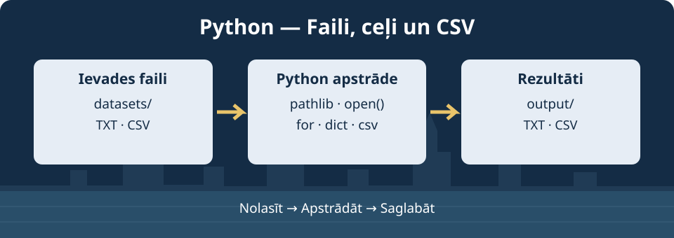

Faili, ceļi un CSV
Nolasi, apstrādā un saglabā datus. Izmanto Python standarta bibliotēku un iepriekš apgūtos ciklus, kolekcijas un funkcijas.
Šodien svarīgākais: saprast darba mapi, droši lasīt un rakstīt UTF-8 failus, apstrādāt CSV ar csv moduli. Pārlūka demonstrācijas tikai modelē Python uzvedību.

1. No operatīvās atmiņas līdz failam
Mainīgie dzīvo programmas izpildes laikā. Fails saglabā datus arī pēc programmas beigām. Ievade → apstrāde → izvade: agrāk izmantojām input() un print(), tagad ievadi lasām no diska un rezultātu saglabājam.
| Formāts | Piemērs | Pielietojums |
|---|---|---|
| TXT | pilsetas.txt | Brīvs teksts |
| CSV | expenses.csv | Tabulas |
| JSON | expenses.json | Ligzdoti dati (7. nodarbība) |
Lejupielādē vai atjaunini kursa repozitoriju (Git ceļvedis), atver tā saknes mapi VS Code. Visi piemēri izmanto šo darba mapi. Ja lejupielādē atsevišķus failus, izveido darba mapē datasets apakšmapi un ievieto tajā pilsetas.txt un expenses.csv. Avota failus nepārrakstīsim.
2. Faili, mapes un ceļi
Absolūts ceļš sākas no failu sistēmas saknes, relatīvs — no pašreizējās darba mapes (current working directory). Tā ne vienmēr sakrīt ar skripta mapi. Windows lieto arī disku burtus, macOS/Linux — sakni /. pathlib.Path veido ceļus pārnesami.
from pathlib import Path
print("Darba mape:", Path.cwd())
path = Path("datasets") / "pilsetas.txt"
print("Relatīvais ceļš:", path)
print("Absolūtais ceļš:", path.resolve())
print("Vai fails pastāv?", path.is_file())from pathlib import Path
path = Path("datasets") / "pilsetas.txt"
print(path.name, path.suffix)
print(path.parent)
print(path.exists())Interaktīvi: darba mape un relatīvais ceļš
JavaScript modelis, nevis Python interpretators. Netiek mainīti īsti faili.
Papildu: ceļš attiecībā pret skriptu
__file__ ir skripta faila atrašanās vieta; piezīmju grāmatā tas parasti nav definēts. Šis piemērs der skriptam, kas atrodas blakus datu failam.
from pathlib import Path
folder = Path(__file__).resolve().parent
path = folder / "pilsetas.txt"Mapju struktūra un Windows ceļi
Python_RTU_2026_27/
datasets/
pilsetas.txt
expenses.csv
lessons/06_files_csv/
01_paths.py
output/ (rodas izpildes laikā)Terminālī palaid no saknes: python lessons/06_files_csv/01_paths.py (Windows arī py). Ja izmanto VS Code pogu Run, pārbaudi darba mapi; tā var atšķirties no skripta mapes.
from pathlib import Path
print(Path.cwd())
print(Path.home())
# Windows ceļu pieraksta piemēri:
path1 = Path("C:/Users/Anna/Documents/data.txt")
path2 = Path(r"C:\Users\Anna\Documents\data.txt")
folder = Path("datasets")
print(folder.is_dir())
for path in sorted(folder.glob("*.txt")):
print(path.name, path.stem, path.suffix)iterdir() uzskaita mapes saturu; glob() meklē pēc šablona, rglob() arī apakšmapēs. Nemeklē visu disku.
3. Teksta failu lasīšana
open() atver failu; with nodrošina tā aizvēršanu, izejot no bloka (arī kļūdas gadījumā). encoding="utf-8" ir svarīgs latviešu burtiem. read() nolasa visu tekstu, readlines() atgriež rindu sarakstu, bet cikls lasa pa rindai.
with open("datasets/pilsetas.txt", encoding="utf-8") as file:
text = file.read()
print(text, end="")
print("Rindas:", len(text.splitlines()))
print("Vārdi:", len(text.split()))Rindas: 5
Vārdi: 5
with open("datasets/pilsetas.txt", encoding="utf-8") as file:
for line in file:
print(line.rstrip("\n"))with open("datasets/pilsetas.txt", encoding="utf-8") as file:
lines = file.readlines()
print(lines)
print(lines[0].strip())Rindas parasti satur beigu jaunrindas simbolu \n. strip() noņem arī citas atstarpes abos galos; rstrip("\n") noņem tikai jaunrindas simbolus.
Faila pozīcija, rakstzīmes un baiti
with open("datasets/pilsetas.txt", encoding="utf-8") as file:
print(repr(file.readline()))
print(file.readlines())
print(repr(file.read())) # tukšs, jo esam beigās
text = "Rīga"
print(len(text), len(text.encode("utf-8"))) # 4, 5
print(text.encode("utf-8"))read() un readlines() ielādē atlikušo saturu atmiņā; cikls lasa pa rindai. Path.read_text(encoding="utf-8") ir ērts īsiem tekstiem.
Binārs fails: rb un wb
from pathlib import Path
path = Path("output/lesson06/demo.bin")
path.parent.mkdir(parents=True, exist_ok=True)
with path.open("wb") as file:
file.write("Rīga".encode("utf-8"))
with path.open("rb") as file:
data = file.read()
print(type(data), data, len(data))
assert data.decode("utf-8") == "Rīga"Binārā režīmā iegūst bytes, nevis str; attēla failu parasti nedekodē kā tekstu.
4. Teksta failu rakstīšana
Režīms r ir lasīšana, w — rakstīšana (esošais saturs tiek dzēsts atvēršanas brīdī), a — papildināšana. w un a izveido failu, ja tas nepastāv, bet neizveido trūkstošu vecākmapi.
from pathlib import Path
# Rakstām tikai mācību rezultātu mapē.
Path("output").mkdir(exist_ok=True)
with open("output/pilsetas_demo.txt", "w", encoding="utf-8") as file:
file.write("Rīga\n")
with open("output/pilsetas_demo.txt", "a", encoding="utf-8") as file:
file.write("Cēsis\n")
with open("output/pilsetas_demo.txt", encoding="utf-8") as file:
print(file.read(), end="")Interaktīvi: faila režīmi
JavaScript modelis, nevis Python interpretators. Netiek mainīti īsti faili.
Faila saturs:
write() pati nepievieno jaunrindu, tā jānorāda. Izmēģini programmu divreiz un pārbaudi, kā atšķiras w un a.
Izmēģini atsevišķās palaišanās
python lessons/06_files_csv/live_coding/04_writing_text_live.py w Rīga
python lessons/06_files_csv/live_coding/04_writing_text_live.py a Cēsis
python lessons/06_files_csv/live_coding/04_writing_text_live.py r
python lessons/06_files_csv/live_coding/04_writing_text_live.py w LiepājaAtver output/lesson06/modes.txt pēc katras palaišanas. Pirms pēdējās prognozē, kas notiks ar iepriekšējo saturu.
Laboratorijas izvēlētā darbība Python kodā
5. Failu apstrāde ar funkcijām
Iepriekš apguvām funkcijas un ciklus. Tagad atdalām faila lasīšanu no paša algoritma. Funkcijai var nodot ceļu un meklējamo vārdu; tā atgriež rezultātu, ko pārbaudām.
from pathlib import Path
def filter_lines(source, destination, keyword):
if Path(source).resolve() == Path(destination).resolve() or (
Path(destination).exists() and Path(source).samefile(destination)
):
raise ValueError("Avota un rezultāta fails nedrīkst sakrist")
count = 0
with open(source, encoding="utf-8") as src:
with open(destination, "w", encoding="utf-8") as dst:
for line in src:
if keyword.lower() in line.lower():
dst.write(line)
count += 1
return count
Path("output").mkdir(exist_ok=True)
count = filter_lines("datasets/pilsetas.txt", "output/riga.txt", "Rīga")
print("Atlasītas rindas:", count)Atlasītas rindas: 2
def count_words(text):
counts = {}
for word in text.lower().split():
counts[word] = counts.get(word, 0) + 1
return counts
with open("datasets/pilsetas.txt", encoding="utf-8") as file:
counts = count_words(file.read())
print(counts)
assert counts["rīga"] == 2Interaktīvi: rindu filtrēšana
JavaScript modelis, nevis Python interpretators. Netiek mainīti īsti faili.
Trīs funkcijas vienā datu plūsmā
from pathlib import Path
def read_text(path):
return Path(path).read_text(encoding="utf-8")
def count_words(text):
counts = {}
for word in text.lower().split():
counts[word] = counts.get(word, 0) + 1
return counts
def save_word_counts(path, counts):
path = Path(path)
path.parent.mkdir(parents=True, exist_ok=True)
with path.open("w", encoding="utf-8") as file:
for word, count in sorted(counts.items()):
file.write(f"{word}: {count}\n")
counts = count_words(read_text("datasets/pilsetas.txt"))
assert counts["rīga"] == 2
assert count_words("") == {}
save_word_counts("output/lesson06/word_counts.txt", counts)Algoritms count_words nezina, no kurienes nācis teksts. To var testēt neatkarīgi no faila. Filtrēšanā pārbaudi, ka avots un mērķis nav viens un tas pats fails.
6. CSV datu formāts
CSV (comma-separated values) ir teksta formāts tabulām. Pirmajā rindā bieži ir kolonnu nosaukumi. Laukus atdala komats vai cits atdalītājs (delimiter), piemēram, semikols. Pēdiņas ļauj laukā ietvert komatu. Latvijas izklājlapās sastopams arī decimālkomats.
| date | category | description | amount_eur |
|---|---|---|---|
| 2026-11-01 | food | maize | 2.15 |
| 2026-11-01 | transport | bilete | 1.50 |
| 2026-11-02 | food | piens | 1.65 |
| 2026-11-03 | books | gramata | 12.00 |
import csv
with open("datasets/expenses.csv", encoding="utf-8", newline="") as file:
reader = csv.reader(file)
header = next(reader)
print(header)
for row in reader:
print(row)Interaktīvi: CSV atdalītājs
JavaScript modelis, nevis Python interpretators. Netiek mainīti īsti faili.
| prece | daudzums | cena |
|---|---|---|
| Maize | 2 | 1.50 |
| Piens | 3 | 1.20 |
CSV laukus drošāk parsēt ar csv, nevis split(","). Atver CSV ar newline="", lai modulis pats pārvaldītu rindbeigas.
CSV ar pēdiņām
Izvēlies piemēru. Modelis parsē vienu korektu CSV ierakstu (nevis pilnu failu).
Latvijas izklājlapu CSV
Excel var eksportēt CSV ar semikolu, decimālkomatu un UTF-8 BOM; pārbaudi faktisko formātu. .xlsx nav CSV.
import csv
with open("datasets/products_lv.csv", encoding="utf-8-sig", newline="") as file:
for row in csv.DictReader(file, delimiter=";"):
price = float(row["cena"].replace(",", "."))
quantity = int(row["daudzums"])
print(row["prece"], f"{price * quantity:.2f}")Lejupielādēt products_lv.csv. Kopā 10.60 EUR.
7. CSV lasīšana un rakstīšana
csv.reader atgriež rindu sarakstus, bet csv.DictReader katru rindu atgriež kā vārdnīcu ar galvenes atslēgām. Lauki ir virknes, līdz tās pārveidojam.
import csv
with open("datasets/expenses.csv", encoding="utf-8", newline="") as file:
reader = csv.DictReader(file)
for row in reader:
amount = float(row["amount_eur"])
print(row["description"], f"{amount:.2f} EUR")import csv
total = 0.0
with open("datasets/expenses.csv", encoding="utf-8", newline="") as file:
for row in csv.DictReader(file):
total += float(row["amount_eur"])
print(f"Kopā: {total:.2f} EUR")Kopā: 35.00 EUR
import csv
def expense_summary(path):
totals = {}
with open(path, encoding="utf-8", newline="") as file:
for row in csv.DictReader(file):
category = row["category"]
amount = float(row["amount_eur"])
totals[category] = totals.get(category, 0.0) + amount
return totals
if __name__ == "__main__":
totals = expense_summary("datasets/expenses.csv")
for category, amount in sorted(totals.items()):
print(f"{category}: {amount:.2f} EUR")
print(f"Kopā: {sum(totals.values()):.2f} EUR")
assert abs(sum(totals.values()) - 35.0) < 1e-9| Kategorija | EUR |
|---|---|
| food | 13.50 |
| transport | 3.00 |
| books | 15.60 |
| household | 2.90 |
import csv
from pathlib import Path
Path("output").mkdir(exist_ok=True)
with open("datasets/expenses.csv", encoding="utf-8", newline="") as source:
with open("output/food.csv", "w", encoding="utf-8", newline="") as target:
reader = csv.DictReader(source)
writer = csv.DictWriter(target, fieldnames=["date", "category", "description", "amount_eur"])
writer.writeheader()
for row in reader:
if row["category"] == "food":
writer.writerow(row)DictWriter izmanto kolonnu nosaukumus un writeheader(). Rezultātā pieci pārtikas ieraksti un galvene.
Interaktīvi: izdevumu atlase un summēšana
Modelis izmanto kursa 10 CSV ierakstus un veselos centus; katras rindas labajā pusē ir tekošā kopsumma.
8. Kļūdu apstrāde
Pārbaudi kļūdas paziņojumu: FileNotFoundError — nepareizs ceļš vai neesošs fails; UnicodeDecodeError — neatbilstošs kodējums; ValueError — nederīga skaitļa virkne. Kļūdu apstrādei izmanto konkrētus izņēmumus, nevis klusu visu kļūdu ignorēšanu.
import csv
try:
with open("datasets/expenses.csv", encoding="utf-8", newline="") as file:
reader = csv.DictReader(file)
for row in reader:
try:
print(float(row["amount_eur"]))
except (ValueError, TypeError, KeyError):
print(f"Nederīgs ieraksts, beigu rinda {reader.line_num}.")
except FileNotFoundError:
print("Fails nav atrasts. Pārbaudi darba mapi.")
except UnicodeDecodeError:
print("Pārbaudi faila kodējumu.")Izmēģini ar nepareizu ceļu; nederīga skaitļa pārbaudei izveido CSV kopiju, nevis maini kursa oriģinālu. Sarežģītākos gadījumos jāvalidē arī galvene, tukši lauki un skaitļu robežas.
Diagnostikas secība
1. Izdrukā Path.cwd() un resolve(). 2. Pārbaudi is_file(). 3. Atver avotu kā tekstu; pārbaudi kodējumu un CSV galveni. 4. Skaitļu pārveidei pārbaudi arī tukšus laukus un NaN (math.isfinite). reader.line_num norāda fizisko beigu rindu, nevis vienmēr ieraksta numuru.
Bojāto datu paraugs: 2 derīgi, 4 nederīgi. Skati izvērsto piemēru.
9. Patstāvīgais praktiskais darbs (20:20–21:05)
Izpildi četrus pamatuzdevumus savā datorā. Ja neizdodas, vispirms pārbaudi darba mapi, datus un kļūdas tekstu. Risinājumus atver pēc paša mēģinājuma.
6.1. Teksta statistika (10 min)
Nolasi pilsētas, izdrukā rindu un vārdu skaitu; sagaidāms 5 un 5.
Padoms: read(), splitlines(), split()
Viens iespējamais risinājums (pēc mēģinājuma)
with open("datasets/pilsetas.txt", encoding="utf-8") as file:
text = file.read()
print(text, end="")
print("Rindas:", len(text.splitlines()))
print("Vārdi:", len(text.split()))6.2. Rindu filtrēšana (10 min)
Saglabā visas rindas ar Rīgu jaunā failā; sagaidāmas divas rindas.
Padoms: Izmanto ciklu, if un write.
Viens iespējamais risinājums (pēc mēģinājuma)
from pathlib import Path
def filter_lines(source, destination, keyword):
if Path(source).resolve() == Path(destination).resolve() or (
Path(destination).exists() and Path(source).samefile(destination)
):
raise ValueError("Avota un rezultāta fails nedrīkst sakrist")
count = 0
with open(source, encoding="utf-8") as src:
with open(destination, "w", encoding="utf-8") as dst:
for line in src:
if keyword.lower() in line.lower():
dst.write(line)
count += 1
return count
Path("output").mkdir(exist_ok=True)
count = filter_lines("datasets/pilsetas.txt", "output/riga.txt", "Rīga")
print("Atlasītas rindas:", count)6.3. Izdevumu analīze (15 min)
Nolasi CSV, izdrukā ierakstu skaitu un kopējo summu: 10 un 35.00 EUR.
Padoms: Pārveido amount_eur ar float().
Viens iespējamais risinājums (pēc mēģinājuma)
import csv
with open("datasets/expenses.csv", encoding="utf-8", newline="") as file:
rows = list(csv.DictReader(file))
total = sum(float(row["amount_eur"]) for row in rows)
print(len(rows), f"{total:.2f} EUR")6.4. Izdevumi pa kategorijām (10 min)
Apkopo summas vārdnīcā. Pārtika 13.50, transports 3.00, grāmatas 15.60, saimniecība 2.90.
Padoms: dict.get(category, 0.0)
Viens iespējamais risinājums (pēc mēģinājuma)
import csv
def expense_summary(path):
totals = {}
with open(path, encoding="utf-8", newline="") as file:
for row in csv.DictReader(file):
category = row["category"]
amount = float(row["amount_eur"])
totals[category] = totals.get(category, 0.0) + amount
return totals
if __name__ == "__main__":
totals = expense_summary("datasets/expenses.csv")
for category, amount in sorted(totals.items()):
print(f"{category}: {amount:.2f} EUR")
print(f"Kopā: {sum(totals.values()):.2f} EUR")
assert abs(sum(totals.values()) - 35.0) < 1e-9Lejupielādējamie Python piemēri · Uzdevumi repozitorijā
Ātrākajiem: 6.5–6.15
Sākuma fails · Visi 11 papildu uzdevumi · Dati
6.5–6.6. Vārdu biežums un teksta tīrīšana
Izmanto rainis.txt, veidenbaums.txt; vārdnīca, strip un filtrēšana.
Padoms un risinājums pēc mēģinājuma
Izpildāmi risinājumi ar funkcijām; pārbaudi izvades failus un sagaidāmos rezultātus.
6.7–6.9. CSV atlase un pārskats
Pārtikas atlase: 5 rindas. sales.csv: 60 ieraksti, 372.00 EUR. Kategoriju pārskats: 4 rindas.
Padoms un risinājums pēc mēģinājuma
Izpildāmi risinājumi ar funkcijām; pārbaudi izvades failus un sagaidāmos rezultātus.
6.10–6.12. Vairāki faili un nederīgi dati
glob, 2 un 1 Rīgas rindas; 2 derīgi un 4 nederīgi CSV ieraksti; reģionālais CSV 10.60 EUR.
Padoms un risinājums pēc mēģinājuma
Izpildāmi risinājumi ar funkcijām; pārbaudi izvades failus un sagaidāmos rezultātus.
6.13–6.15. Precizitāte, moduļi un automātisks pārskats
Decimal, importē funkciju, izveido TXT pārskatu.
Padoms un risinājums pēc mēģinājuma
Izpildāmi risinājumi ar funkcijām; pārbaudi izvades failus un sagaidāmos rezultātus.
10. Papildu izaicinājumi un atsauces
Izmanto Path.glob("*.txt") vairāku failu apstrādei. Izveido CSV kopiju ar nederīgu summu un ziņo par kļūdainās rindas numuru. Literāram tekstam izmanto iepriekšējā kursa Rainis vai Veidenbaums piemērus (pārbaudi avotu un kodējumu).
Vairāku failu meklēšana
from pathlib import Path
for path in Path("datasets").glob("*.txt"):
print(path.name)Precīza naudas aritmētika un binārie faili
Mācību piemēros izmantojam float un formatēšanu ar divām zīmēm. Finanšu aprēķinos izvēlies Decimal no teksta vai veselus centus. Bināros failus lasa ar rb un iegūst bytes, nevis str.
from decimal import Decimal
print(Decimal("0.1") + Decimal("0.2"))Dokumentācija un agrākie materiāli
Nākamreiz tos pašus datus pārveidosim JSON formātā un vizualizēsim piezīmju grāmatā.